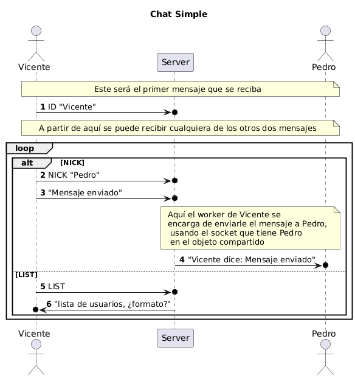
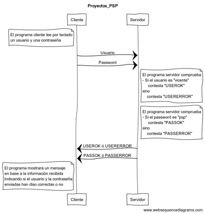

PSP - U4 Actividades
Índice
Nombre del proyecto
En estas actividades volvemos a usar la nomenclatura de clases y proyectos explicada en la hoja de actividades de autoevaluación de la U2
1. Actividad U4A04_ServidorTiempo
Clases psp.actividades.U4A04_TiempoClient y Clase psp.actividades.U4A04_TiempoServer
Diseña y programa un cliente / servidor UDP (monohilo) que sirva como servidor de tiempo para una máquina cliente.
El funcionamiento del protocolo es muy sencillo:
- El cliente recogerá la hora local de su sistema.
- Hará una conexión con el servidor y esperará a que le envíe su hora.
- El cliente volverá a coger la hora local de su sistema.
- El cliente comprobará si la hora recibida del servidor está entre las horas cogidas de su sistema y mostrará un
mensaje informando de si la máquina cliente está en hora o no.- Si la hora del servidor está entre las dos horas cogidas por el cliente, mostrará un mensaje indicando que la máquina cliente está en hora.
- Si la hora del servidor no está entre las dos horas cogidas por el cliente, mostrará un mensaje indicando que la máquina cliente no está en hora.
- El cliente puede no recibir la hora del servidor si este no está disponible. En este caso, el cliente mostrará un mensaje indicando que no ha podido recibir la hora del servidor. Para controlar cuándo no se recibe una respuesta del servidor, se puede usar un temporizador en el cliente mediante el método
socket.setSoTimeout(tiempo).
El formato en el que se genere y se reciba la hora se deja a libre elección del diseñador de la aplicación, aunque en estos casos se trabaja con un formato tipo timestamp (número de segundos desde una fecha de referencia: 1 de enero de 1970 GMT).
2. Actividad U4A05_WalkieTalkie
Clase psp.actividades.U4A05_WalkieTalkie
Diseña y programa una clase que haga a la vez de cliente y servidor UDP (monohilo) que permita funcionar en modo Walkie-Talkie (https://es.wikipedia.org/wiki/Walkie-talkie) usando un protocolo de tipo PTT - Push To Talk (https://es.wikipedia.org/wiki/Pulsa_y_habla).
En esta práctica vamos a trabajar enviando mensajes a la dirección de broadcast de nuestra red (no confundir con multicast). Estas aplicaciones sólo funcionan dentro de la red local, no funcionan más allá de nuestro router.
Por ejemplo, si nuestra dirección es 10.0.100.1 con máscara 255.255.0.0 (/16), la dirección de broadcast será 10.0.255.255.
Para probar la aplicación tendremos que ejecutarla en equipos diferentes
El cliente, una vez iniciado va a crear un DatagramSocket que atienda peticiones en el puerto 9876. Además, tendrá que llamar al método socket.setBroadcast(true); para poder enviar broadcasts.
En este caso, al ser un sistema en el que no hay servidor, no hay ningún protocolo preestablecido, por lo que tenemos que gestionar las lecturas y escrituras con hilos.
Una vez creado el DatagramSocket,
- Crearemos un hilo que se encargará de leer todo el tiempo. Esperará a que llegue un
mensaje y mostrará por consola lo que reciba, precedido por la IP de origen del mensaje. Después volverá a quedarse esperando. - Crearemos otro hilo que se encargará de enviar mensajes. Esperará a que se introduzca un mensaje por teclado y lo enviará a todos los equipos que estén a la escucha. Después volverá a esperar a que se introduzca otro mensaje. La dirección y el puerto de envío serán la dirección de broadcast y el puerto 9876.
Si hay varios clientes y todos escriben a la vez, puede ser bastante complicado seguir una conversación. Así que como mejora del programa podemos seguir e implementar el protocolo PushToTalk (PPT) de comunicaciones por radio (https://www.tecnitran.es/como-usar-un-walkietalkie/).
- Cuando alguien quiere hablar, pulsa el botón del walkie (en nuestro caso envía el mensaje “PTT”).
- Ese cliente puede enviar tantos mensajes como quiera.
- Cuando quiera dejar de hablar, suelta el botón del walkie (en nuestro caso envía el mensaje “Cambio”).
- Los demás deben respetar el turno y permanecer en silencio (sin enviar mensajes). No es necesario controlarlo, aunque se puede forzar a que no puedan enviar viendo si ha llegado un “PTT” y no ha llegado un “Cambio”.
- Cuando un cliente quiere irse, apaga el walkie (en nuestro caso envía el mensaje “Corto”).
prueba de aplicaciones
Para probarlo, no se puede usar Telnet, ya que sólo funciona con TCP. Si instaláis NetCat, podéis usarlo como servidor UDP con el siguiente comando
$ ncat.exe -u -l -p 9876
y como cliente
$ ncat.exe -u localhost 9876 (en vez de localhost se puede poner una IP).
ncat en Windows
Windows Defender puede bloquear el uso de ncat. Si es así, tendréis que añadir una excepción y permitir el uso de ncat.
Normalmente lo detecta como un programa peligroso y un virus, pero no lo es.
3. Actividad U4A06_ChatDuo
Clase psp.actividades.U4A06_ChatDuoClient y psp.actividades.U4A06_ChatDuoServer
Diseña y programa un servidor (multihilo) y un cliente TCP de forma que se permita establece un chat entre dos clientes usando al servidor de intermediario.
El protocolo a implementar será un protocolo sencillo de envío / respuesta entre ambos clientes.
La comunicación de los clientes con el servidor será una comunicación normal, en la que será el servidor el que inicie la comunicación enviando un mensaje a cada cliente cuando se hayan conectado los dos al servidor.
El servidor, que hace de intermediario, tendrá que coordinar la comunicación entre ambos clientes.
- Por un lado, no dejará que se conecten más de dos clientes. Esta gestión la tendrá que hacer en el hilo principal.
- Además, deberá guardar los sockets de los dos clientes que se conecten.
- Creará un hilo (worker) para atender a cada cliente. Cada uno de los dos workers recibirá dos sockets en su constructor, el del cliente que controla ese hilo (origen) y el del cliente que controla el otro hilo (destino).
- Lo primero que hará cada worker es enviar un mensaje a su cliente indicándole que ya puede enviar mensajes.
- A continuación, cada worker se quedará en un bucle esperando a recibir un mensaje por el socket origen y reenviando el mismo mensaje por el socket destino.
- Cuando uno de los hilos envía o recibe el mensaje “EXIT”, se cierra la comunicación y el cliente finaliza su ejecución.
- El servidor, mientras tanto, se queda activo esperando otras dos conexiones para iniciar otro chat.
Como mejora al proceso, se puede controlar que los dos clientes hagan acciones alternas, es decir, que cuando uno escriba un mensaje el otro esté esperando y viceversa.
Pista
El primero que se conecte que empiece enviando y el segundo que empiece esperando.
4. Actividad U4_ChatSimple
Clase psp.actividades.U4_ChatSimpleClient y psp.actividades.U4_ChatSimpleServer
Diseña y programa un servidor (multihilo) y un cliente TCP de forma que se permita establece un chat entre varios clientes.
En el caso de este chat, el servidor va a ser un intermediario que va a recibir los mensajes de los clientes y los va a reenviar a clientes concretos.
Vamos a empezar a trabajar con objetos compartidos entre los hilos. En este caso, el hilo principal va a tener una colección de sockets de los clientes conectados, asociados a su NICK en el chat.
Cuando un cliente se conecta, envía un primer mensaje con el comando ID y el servidor lo guarda en la colección, junto con su socket.
Para comunicarse con otro cliente, el servidor va a recibir dos mensajes:
- En el primer mensaje, el cliente le va a enviar el comando
NICKseguido del nombre del usuario con el que quiere chatear. - En el segundo mensaje, el cliente le va a enviar el texto que quiere enviar a ese usuario.
- El servidor va a buscar si ese usuario está conectado y, en caso afirmativo, le va a reenviar el contenido del segundo mensaje.
- El servidor también puede recibir un comando
LIST. En ese caso, le devolverá al cliente la lista de usuarios conectados.
En esta actividad, hay que gestionar de forma independiente la lectura y la escritura de los mensajes en el cliente. Como ahora el cliente puede enviar y recibir mensajes, los clientes también van a ser multihilo (como en el caso del walkie-talkie).
En el servidor, cada worker va a recibir el socket de la conexión con su cliente y un objeto compartido entre todos los hilos (una colección) donde el hilo principal va a ir guardando todos los sockets de los clientes.
En esa colección tendrá que buscar el socket del cliente con el que se quiere conectar.
Protocolo de comunicación
Dibuja el protocolo de comunicación que se va a seguir en esta actividad.

5. Actividad U4A07_ChatMultiple
Clase psp.actividades.U4A07_ChatMultipleClient y psp.actividades.U4A07_ChatMultipleServer
Diseña y programa un servidor (multihilo) y un cliente TCP de forma que se permita establece un chat entre varios clientes usando al servidor de intermediario.
A diferencia del ejercicio U4A06, ahora cada worker va a recibir el socket de la conexión con su cliente y un objeto compartido entre todos los hilos (una colección) donde el hilo principal va a ir guardando todos los sockets de los clientes.
Cuando un worker recibe un mensaje, tiene que reenviarlo a todos los clientes menos al que lo ha enviado (a todos los sockets menos al que ese worker está conectado). Los mensajes se enviarán precedidos por la IP del cliente que los ha enviado (esa información está en el socket). Vamos a simular un multicast con TCP.
Como ahora hay muchos clientes y no se pueden alternar los envíos y las lecturas, los clientes también van a ser multihilo (como en el caso del walkie-talkie):
- Podemos aprovechar el hilo principal, o crear uno específico, para que se encargue de leer del teclado y enviar los mensajes al servidor.
- Debemos crear un hilo que esté todo el tiempo leyendo del socket y mostrando por consola los mensajes que le vayan llegando.
6. Actividad U4A08_LoginEstados
Diseña y programa un servidor (multihilo) y un cliente TCP de forma que implementen el protocolo definido en el siguiente diagrama de secuencia.
Tal y como indica el nombre de la actividad, se pretende que lo solucionéis usando estados.

Diagrama de secuencia
Hay que entender bien el diagrama para poder programar el protocolo.
El diagrama debemos interpretarlo como un protocolo de comunicación, no como un diagrama de clases.
Por lo tanto, las interacciones se producen en el orden, de arriba hacia abajo, que se indica en el diagrama. Y los intercambios se producen en el sentido que se indica para cada mensaje.
7. Actividad U4_Troyano
Diseña y programa un servidor (monohilo) y un cliente (monohilo) TCP de forma que implementen un troyano que permita controlar un equipo de forma remota.
El servidor será el que controle el troyano y el cliente será el que se conecte al servidor.
Servidor interactivo
No es una práctica común, ya que el servidor no suele ser interactivo, pero en este caso, el servidor va a ser interactivo y va a permitir al usuario controlar el equipo cliente.
El servidor la va a enviar comandos de consola al cliente, para que éste los ejecute en el equipo infectado. El cliente va a enviar la salida de esos comandos al servidor.
Por lo tanto, el protocolo será muy sencillo.
- El cliente se conectará al servidor y se quedará a la espera de recibir un comando.
- El servidor le enviará un mensaje al cliente (introducido por teclado) con el comando que debe ejecutar. Por ejemplo
"dir c:\". - El cliente ejecutará el comando de consola. Tiene que lanzar un proceso para que lo ejecute. Recordad que los comandos del sistema se lanzan con
cmd /c comando. - El cliente recupera la salida del comando y se la envía al servidor.
Hay que establecer un protocolo para que el servidor sepa cuándo ha terminado de ejecutar el comando y cuándo ha terminado de enviar la salida.
Si queremos que el troyano se ejecute en segundo plano, podemos crear un hilo, configurarlo como daemon y que el cliente se ejecute como un hilo.
Warning
No se debe usar este programa para controlar equipos ajenos. Es una práctica ilegal y puede acarrear consecuencias legales.
8. Actividad U4_LecturaFicherosRemotos
Desarrollar una aplicación en Java que permita leer un fichero de texto ubicado en otro ordenador a través de sockets, usando un servidor multihilo y un cliente monohilo.
Los pasos del proceso serán los siguientes:
- Programa cliente: solicita al usuario el nombre de un fichero incluyendo su ruta dentro del proyecto del servidor.
- Programa cliente: envía el nombre y la ruta del fichero al servidor.
- Programa servidor: lee el contenido del fichero y se lo envía al cliente.
- Programa cliente: muestra el contenido por la pantalla.
Una vez finalizada su tarea, ambos extremos cliente y worker, finalizan su ejecución.
Es importante establecer un protocolo de mensajes para que el servidor sepa cuándo ha terminado de enviar el fichero y cuándo ha terminado de recibirlo.
El servidor es multihilo, ya que tiene que atender a varios clientes a la vez.
9. Actividad U4A09_Spyware
Diseña y programa un servidor (multihilo) y un cliente TCP o UDP para simular el funcionamiento de un spyware instalado en un equipo.
El funcionamiento es sencillo.
- En nuestro equipo (hacker) vamos a tener un servidor que estará esperando a recibir peticiones.
- En el equipo de la víctima vamos a tener un cliente. Este cliente hará una captura de pantalla cada X segundos (será uno de los argumentos que recibe el cliente) y enviará la captura al servidor.
Recuerda que a través de los streams o de los datagramas estamos enviando bytes. - El servidor guardará las imágenes recibidas en una carpeta en la raíz del proyecto que tendrá por
nombre la IP del equipo espiado. A la imagen se le pondrá como nombre la fecha y hora de la
recepción del archivo.
Clase AWT Robot
Para hacer la captura, investigad los métodos de la clase java.awt.Robot
Ya tenemos hecho el spyware, ahora sólo necesitamos saber cómo infectar a un equipo 😉
10. Actividad U4_ContadorUDP
Desarrolla una aplicación que transmita números desde un cliente a un servidor mediante el uso de sockets UDP.
Los pasos a seguir se detallan a continuación:
- Programa cliente: Mediante un bucle genera y envía 10000 mensajes con el contenido "Mensaje n" donde n es el número de mensaje.
- Programa cliente: Envía un mensaje con el contenido "FIN" para indicar al servidor que ha terminado de enviar mensajes.
- Programa servidor: Recibe los mensajes y los almacena en un fichero.
- Programa servidor: Cuando recibe el mensaje "FIN" cierra el fichero y finaliza su ejecución.
Una vez finalizada la ejecución, comprobar si han llegado todos los datagramas en el mismo orden en que se enviaron.
Congestión y errores en la red
Si la ejecución se realiza en un mismo ordenador, es probable que lleguen todos los mensajes y que lo hagan en orden.
Si la ejecución se realiza entre dos ordenadores, o entre ordenadores que están en redes diferentes, es probable que se pierda algún mensaje y/o que lleguen en desorden.
Prueba a programar una utilidad (clase) que compruebe si el fichero generado por el servidor contiene todos los mensajes y si los ha guardado en el orden correcto.